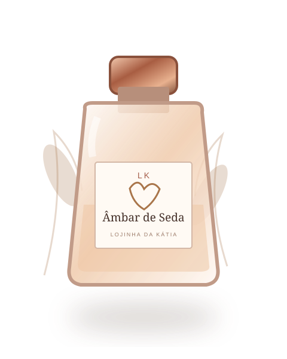

LOJINHA DA KÁTIA · PERFUMARIAA beleza
A beleza
de sentir.
Há aromas que se tornam memórias. Descubra a essência dos pequenos momentos.
Conceito demonstrativo · valores fictícios

Mais do que comprar, é viver uma experiência
CURADORIA COM AFETOPequenos universos.
Ver coleção completaPequenos universos.
Grandes encontros.
UM MUNDO DE NOTAS
Siga o seu instinto.
Cada família olfativa é uma forma de expressar quem você é. Qual delas combina com seu momento?
FAVORITOS DO CONCEITO
Todos os perfumesEssências para amar.

UM JEITO DE CUIDARUma pausa.
Uma pausa.
Um aroma.
Um ritual.
Velas, experiências e presentes personalizados fazem parte do universo da Lojinha da Kátia. Os detalhes de cada serviço serão confirmados diretamente com a loja.
Viva sua ExperiênciaUMA DESCOBERTA SÓ SUA
Qual perfume tem a sua alma?
Um pequeno quiz demonstrativo para encontrar uma família olfativa com a sua cara. Sem armazenar respostas.